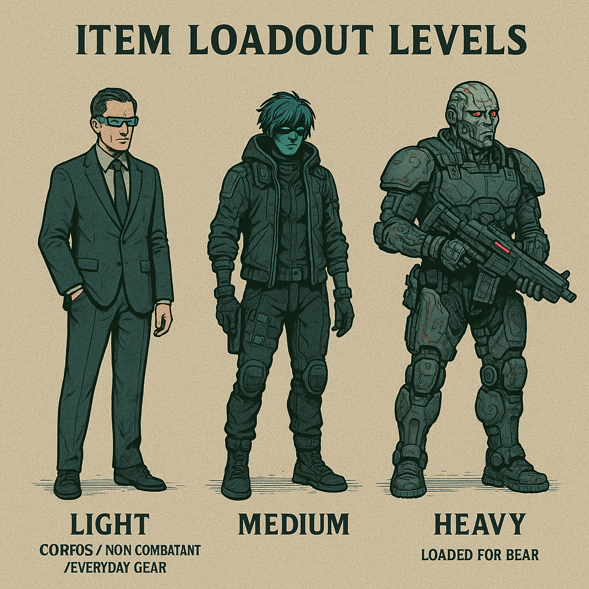

Item Loadouts¶

In most fantasy systems, characters are assumed to be perpetually armed and armored—ready for battle at all times. Cybermancy takes a different approach. In this world, how you appear to the public matters. No one walks into a corner store wearing combat armor and a rocket launcher without drawing attention.
To reflect this, Cybermancy uses Item Loadouts, adapted from the concept introduced in Blades in the Dark. This system keeps play fluid and cinematic: instead of tracking every piece of gear, players simply declare a Loadout Level at the start of a scene. That declaration defines both how the character appears to others and what equipment they can access during the encounter.
Once a scene begins, a player may declare specific items from their loadout list as being “on hand” or ready to use, up to the per-level limits below. This approach minimizes bookkeeping while maintaining narrative flexibility.
Light Loadout (civilian / non-combatant / everyday gear)¶
You look like an ordinary person going about daily life.
- Up to 8 items may be listed, all with the Light designation.
- In any scene while using a Light loadout, up to 4 items may be declared as equipped or in hand.
This is the mode for social encounters, street-level interactions, or any time subtlety and normalcy are essential.
Medium Loadout (ready for action)¶
You appear dangerous, but not openly hostile.
- Up to 12 items may be listed, each with either the Light or Medium designation.
- In any scene while using a Medium loadout, up to 6 items may be declared as equipped or in hand.
- Medium Loadout has to be factored in by the GM to the scene and how people react to you.
To casual observers, you look armed and prepared—like many who walk the streets of Cybermancy’s sprawl after dark. It’s the default state for mercenaries, runners, and anyone who expects trouble.
Heavy Loadout (loaded for bear)¶
You are unmistakably preparing for combat.
- Up to 15 items may be listed, from any loadout designation (Light, Medium, or Heavy).
- In any scene while using a Heavy loadout, up to 8 items may be declared as equipped or in hand.
- -2 on Stealth checks and Heavy Loadout has to be factored in by the GM to the scene and how people react to you.
This mode signals full operational readiness—body armor, heavy weapons, and the kind of presence that clears a sidewalk. Civilians scatter when someone walks past in a Heavy loadout.
Design Notes¶
The system aims to balance realism, pacing, and player freedom. Two questions remain open for refinement:
- Initial List Creation: Will assembling the three loadout lists feel burdensome? Pre-generated loadouts by class, community, or archetype may streamline this step.
- Numerical Limits: The thresholds for Light, Medium, and Heavy loadouts are provisional and subject to playtesting.
Rex “Ghostwire” Mendez (personal notes on loadouts)
Look, kid—nobody walks around the sprawl in full kit unless they’re trying to make a statement. And the statement is usually “shoot me first.”
Gear’s like a mask. You wear what the world expects to see, and keep the rest tucked where it won’t raise alarms. That’s what the loadout system’s really about—presentation. You pick how loud or quiet you want to look before you walk into the scene.
Light loadout? That’s your civvie skin. Street clothes, credstick, maybe a piece small enough to forget about in a scanner. Cops won’t look twice.
Medium loadout means you’re showing teeth. You’re not looking for trouble, but you’re not scared of it either. Most runners live here—leather, smart pistol, a few toys tucked in the coat.
Heavy loadout is war paint. You’re rolling hard, and everyone knows it. You might as well hang a sign that says “The Run Starts Now.”
Here’s the trick—gear doesn’t define you; timing does. You declare what you could have, not what you’re already lugging. When the moment comes and you need that smoke drone or silencer, it’s there—because you planned for it. That’s what separates the pros from the punks.
Keep it flexible. Don’t list junk you’ll never use, don’t waste time swapping between lists mid-scene, and don’t forget—every item you reveal says something about who your character is.
In this city, appearance is armor. Choose your loadout like your life depends on it—because it probably will.